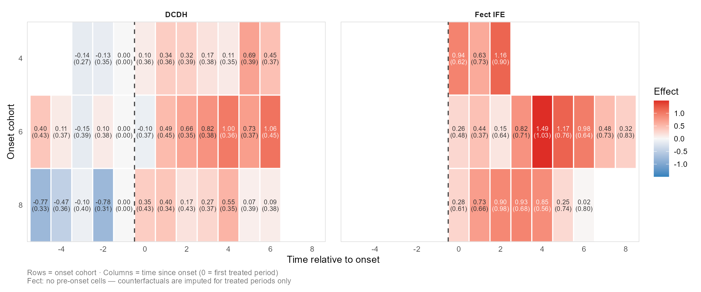
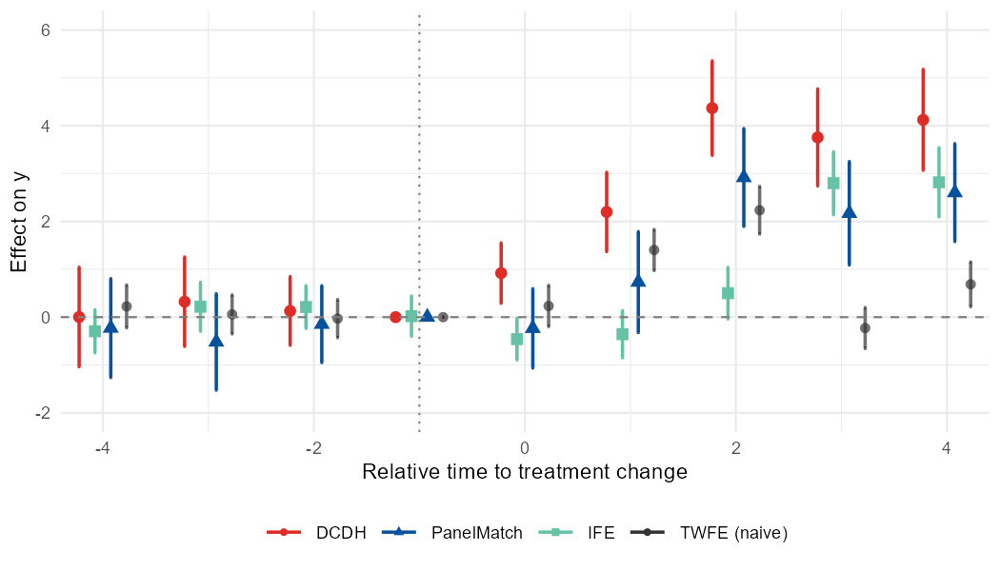
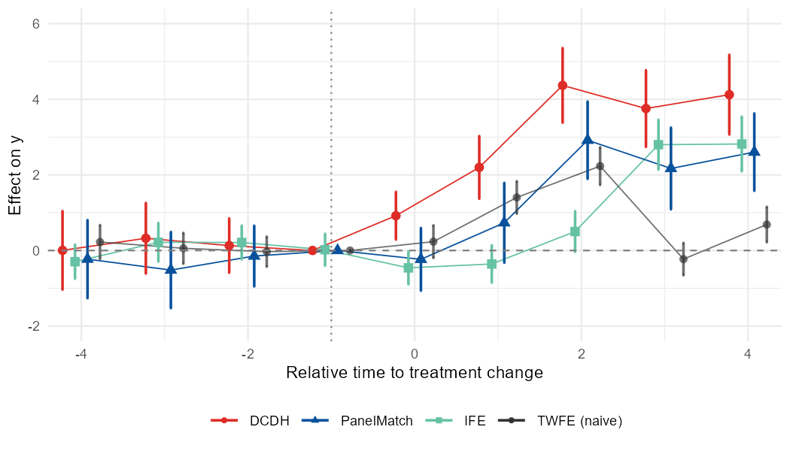
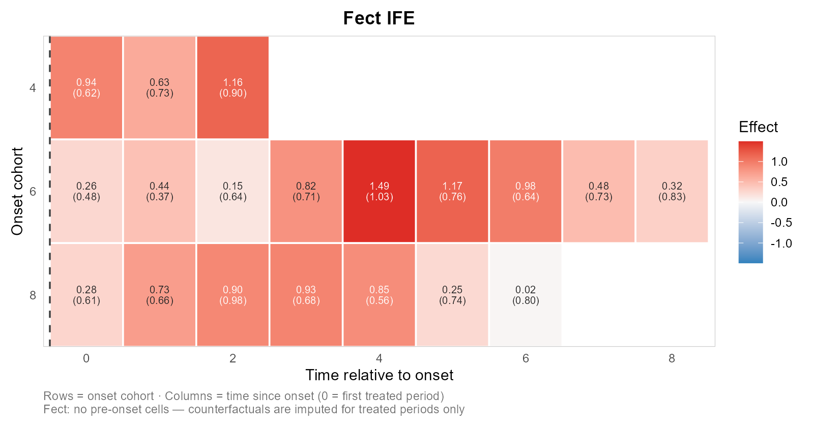
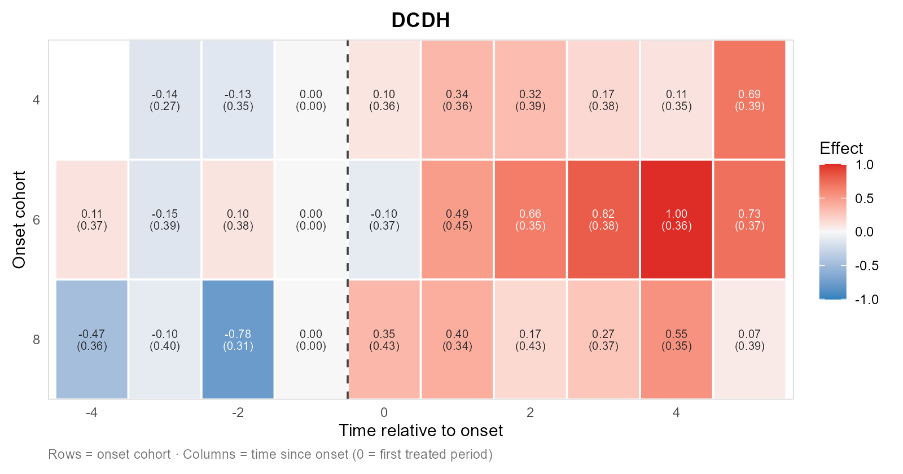

nonabsdid: Visualize Heterogeneity-Robust DID Event Studies and Effect Matrix Heatmap with Non-Absorbing Binary Treatments
nonabsdid is an R package for visualizing and comparing heterogeneity-robust staggered DID event-study estimates under non-absorbing binary treatment, where treatment status may switch on and off over time, including treatment reversals. Its example output event-study plot is as follows.

This package can also produce a cohort-by-time “effect matrix” output as a heatmap so that you can read an estimator’s heterogeneity. It supports DCDH and fect (IFE/MC/FE).

Supported estimators
This package covers existing multiple estimators below and runs analysis via their own packages, then puts their output on the same time axis, the same tidy schema, and the same ggplot2 panel so you can compare them at a glance.
-
DCDH — de Chaisemartin & D’Haultfoeuille, via
DIDmultiplegtDYN. -
PanelMatch — Imai, Kim, & Wang, via
PanelMatch. -
fect family — Liu, Wang, & Xu, via
fect:-
IFE(interactive fixed effects) -
FE(two-way fixed-effects imputation) -
MC(matrix completion)
-
Note: The DCDH estimator depends on
DIDmultiplegtDYN, which in turn requirespolars.polarsis not on CRAN, so install it from R-multiverse:Sys.setenv(NOT_CRAN = "true") install.packages("polars", repos = c("https://community.r-multiverse.org", "https://cloud.r-project.org"))
Plus an optional naive TWFE reference series (via fixest) drawn in a neutral color so you can see what the heterogeneity-robust estimators are correcting against.
Installation
Install the released version from CRAN:
install.packages("nonabsdid")[!NOTE] When the version on CRAN is not the latest, install from GitHub or R-universe for the latest version.
# Development version from GitHub:
# install.packages("pak")
pak::pak("takuma1102/nonabsdid")
install.packages(
"nonabsdid",
repos = c("https://takuma1102.r-universe.dev", getOption("repos"))
)The estimator packages themselves (DIDmultiplegtDYN, PanelMatch, fect, fixest) are listed in Suggests, so install the ones you plan to use.
First-pass exploratory analysis
At the early stage of an analysis, use nabs_event_study_simple() to get an initial sense of how the event-study estimates look. By default it runs a deliberately cheap pass — DCDH plus two-way-FE imputation (c("DCDH", "FE")) and a naive TWFE reference — and on large panels it works on a random sample of units so the first look stays fast. The result is a single overlay plot to inspect before moving on to estimator-specific tuning.
library(nonabsdid)
res <- nabs_event_study_simple(
mydata,
outcome = "y",
treatment = "d",
unit = "id",
time = "t"
)
res$plot # the figure
res$tidy # combined tidy tibble across methods
res$per_method # per-method tidy tibbles
res$fits # native estimator objects (only kept with keep_fits = TRUE)Add the heavier estimators once the cheap pass looks reasonable — they are opt-in because PanelMatch’s bootstrap and IFE/MC’s cross-validation are slow on large panels:
res <- nabs_event_study_simple(
mydata, outcome = "y", treatment = "d", unit = "id", time = "t",
methods = c("DCDH", "PanelMatch", "IFE", "FE", "MC"),
full = TRUE # use every unit, not just the first-pass sample
)If a particular estimator’s package is not installed, that estimator is skipped with a message, and the remaining methods still produce output.
Careful runs
For publication-ready work, switch to the full wrapper or to the underlying packages directly. The unified wrapper:
res_dcdh <- nabs_event_study(mydata,
outcome = "y", treatment = "d",
unit = "id", time = "t",
method = "DCDH",
lags = 6, leads = 8,
controls = c("x1", "x2"))
res_pm <- nabs_event_study(mydata, ..., method = "PanelMatch")
res_ife <- nabs_event_study(mydata, ..., method = "IFE")
res_fe <- nabs_event_study(mydata, ..., method = "FE")
res_mc <- nabs_event_study(mydata, ..., method = "MC")Or call estimators directly and tidy their output:
fit <- DIDmultiplegtDYN::did_multiplegt_dyn(
df = mydata, outcome = "y", group = "id", time = "t",
treatment = "d", effects = 9, placebo = 6
)
tidy_dcdh <- as_nabs_event_study(fit, outcome = "y")
# Naive TWFE reference for the plot:
ref <- naive_twfe(mydata, outcome = "y", treatment = "d",
unit = "id", time = "t",
lags = 6, leads = 8)
# Overlay everything:
nabs_event_plot(
res_dcdh$tidy, res_pm$tidy, res_ife$tidy,
reference = ref,
xlim = c(-6, 8), ylim = c(-2, 2),
ylab = "Effect on outcome"
)Plot styles
nabs_event_plot() offers two ways to encode the pre/post distinction, plus an option to join point estimates with a thin line. Both arguments also flow through nabs_event_study_simple() via ....
By default (style = "prepost_color"), each method gets its own color with separate shades for pre- and post-treatment periods:

nabs_event_plot(res_dcdh$tidy, res_pm$tidy, res_ife$tidy, reference = ref)With style = "method_shape", color encodes the method only, and the pre/post distinction is carried by the marker shape (hollow circles for pre, filled triangles for post). This reads cleanly in grayscale:

nabs_event_plot(res_dcdh$tidy, res_pm$tidy, res_ife$tidy, reference = ref,
style = "method_shape")Set connect = TRUE (works with either style) to join each series’ point estimates with a thin line, drawn through the full path (pre and post are connected, including across the treatment boundary):

nabs_event_plot(res_dcdh$tidy, res_pm$tidy, res_ife$tidy, reference = ref,
style = "method_shape", connect = TRUE)Working from existing results
If you have already run supported estimators, you can convert their result objects into the common nabs_event_study_tbl schema with as_nabs_event_study().
tidy_one <- as_nabs_event_study(fit_dcdh, outcome = "y")
tidy_all <- as_nabs_event_study(
list(fit_dcdh, fit_panelmatch, fit_ife),
outcome = "y"
)Results returned by nabs_event_study() and nabs_event_study_simple() can also be passed back to as_nabs_event_study():
res <- nabs_event_study(...)
tidy_res <- as_nabs_event_study(res)
res_simple <- nabs_event_study_simple(...)
tidy_simple <- as_nabs_event_study(res_simple)Tidy schema
All tidiers return a tibble of class nabs_event_study_tbl with these columns:
| column | type | description |
|---|---|---|
time |
int | Relative period (0 = treatment onset/switch). |
estimate |
num | Point estimate. |
std.error |
num | Standard error (may be NA). |
conf.low |
num | Lower CI bound. |
conf.high |
num | Upper CI bound. |
window |
chr |
"pre" if time < 0, else "post". |
method |
chr |
"DCDH", "PanelMatch", "IFE", "FE", "MC", "TWFE", … |
outcome |
chr | Outcome variable name. |
All methods share this convention (time = 0 = treatment onset / the period of a treatment switch, time = -1 = reference). DCDH’s native output anchors the reference at 0, so it is shifted by one period internally to line up.
Anything coercible to a data frame with at least time and estimate columns also flows through as_nabs_event_study(). Adding a new estimator later means writing a one-line method that pulls the right slots — the plotting code keeps working.
Large panels and troubleshooting
A few things are worth knowing before you point this at a big panel:
-
DCDH needs
polars. TheDIDmultiplegtDYNbackend refers to thepolarspackage; nonabsdid attaches it for you (with a one-time note), but it must be installed. If automatic loading fails, runlibrary(polars)once and retry. -
Unit / cluster ids are coerced automatically. PanelMatch requires a numeric unit id and DCDH’s polars backend cannot cluster on a string, so a non-numeric
unitorclusteris replaced by integer codes (added as a new column). This only relabels ids and never changes estimates. -
fectruns single-threaded by default. ForIFE/FE/MC,parallel = FALSEis the default: on large panels, copying the data to parallel workers tends to exhaust memory rather than help. Setparallel = TRUE(optionally withcores) for small panels. -
Tuning knobs are first-class arguments.
nabs_event_study()acceptscv,nboots,r,parallel, andcoresfor thefectfamily, andnumber.iterationsfor PanelMatch’s bootstrap. For the lightest IFE run, for example, fix the factors and skip cross-validation withnabs_event_study(..., method = "IFE", cv = FALSE, r = 2, parallel = FALSE). -
Samples can differ across estimators. DCDH,
fect, and PanelMatch drop missing rows differently, so a row withNAin a control may be used by one method and not another; nonabsdid notes when partial missingness is present.
For Stata users
nonabsdid ships Stata interoperability:
# Read a .dta directly (labelled columns and .a-.z missings handled),
# or just pass the path straight to the wrappers:
mydata <- nabs_read_dta("mypanel.dta")
res <- nabs_event_study_simple("mypanel.dta",
outcome = "y", treatment = "d",
unit = "id", time = "t")
# Stata-style argument names from did_multiplegt_dyn are accepted and
# translated with a message (group -> unit, effects -> leads, placebo -> lags):
res <- nabs_event_study(mydata, outcome = "y", treatment = "d", time = "t",
method = "DCDH",
group = "id", effects = 8, placebo = 6)
# Write the tidy estimates back out for a Stata-using coauthor:
nabs_write_dta(res$tidy, "event_study_results.dta")See vignette("nonabsdid-for-stata-users") for the full option-by-option mapping from did_multiplegt_dyn and the round trip back to twoway.
Cohort matrix
The event-study workflow above collapses every cohort onto one relative-time axis. A separate feature line keeps the onset cohort as a second dimension and draws it as a heatmap — rows are cohorts, columns are relative (or calendar) time, fill is the estimated effect. One method per plot reads best (the method becomes the title); show_se = TRUE prints the standard error beneath each estimate.


res_ife <- nabs_effect_cells(panel, outcome = "y", treatment = "d",
unit = "id", time = "t", method = "IFE")
res_dcdh <- nabs_effect_cells(panel, outcome = "y", treatment = "d",
unit = "id", time = "t", method = "DCDH")
# individual heatmaps (recommended): auto-titled, estimates + SEs in each cell
plot_effect_matrix(res_ife$cells, show_estimates = TRUE, show_se = TRUE)
plot_effect_matrix(res_dcdh$cells, show_estimates = TRUE, show_se = TRUE)
# passing several methods facets them with a shared scale, but gets crowded:
# plot_effect_matrix(res_dcdh$cells, res_ife$cells)This currently supports DCDH and the fect family only. PanelMatch is intentionally omitted: a faithful cohort matrix needs per-cohort estimates and per-cohort SEs, and for PanelMatch that requires re-aggregating matched-set effects by switch time and re-running the matched-set bootstrap on that re-aggregation — out of scope for now, so it is left out rather than shipped with incorrect standard errors. Compare methods as triangulation of the pattern, not as cell-by-cell equality (the estimators differ in estimand, controls, and coverage). See the Cohort-by-time effect matrices and heatmaps article for more details.
Status
This package is experimental. The output schema is intended to be stable, but the upstream estimator packages occasionally rearrange their internal structures, so please pin versions in production code.
Citation
If you use nonabsdid in your work, please kindly cite the package:
Takuma Iwasaki (2026). nonabsdid: Heterogeneity-Robust DID Event Studies with Non-Absorbing Binary Treatments. R package version X.Y.Z. https://github.com/takuma1102/nonabsdid
Please also cite whichever underlying estimator(s) you actually used.
- de Chaisemartin, C., & D’Haultfœuille, X. (2026). “Difference-in-Differences Estimators of Intertemporal Treatment Effects.” Review of Economics and Statistics.
- Imai, Kim, & Wang (2023) “Matching Methods for Causal Inference with Time-Series Cross-Sectional Data.” AJPS.
- Liu, Wang, & Xu (2024) “A Practical Guide to Counterfactual Estimators for Causal Inference with Time-Series Cross-Sectional Data.” AJPS.